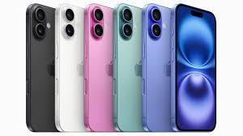
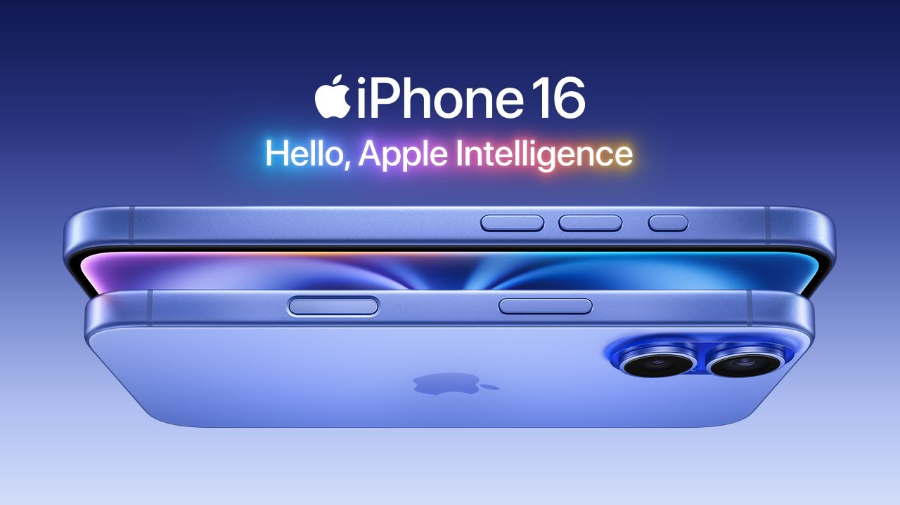
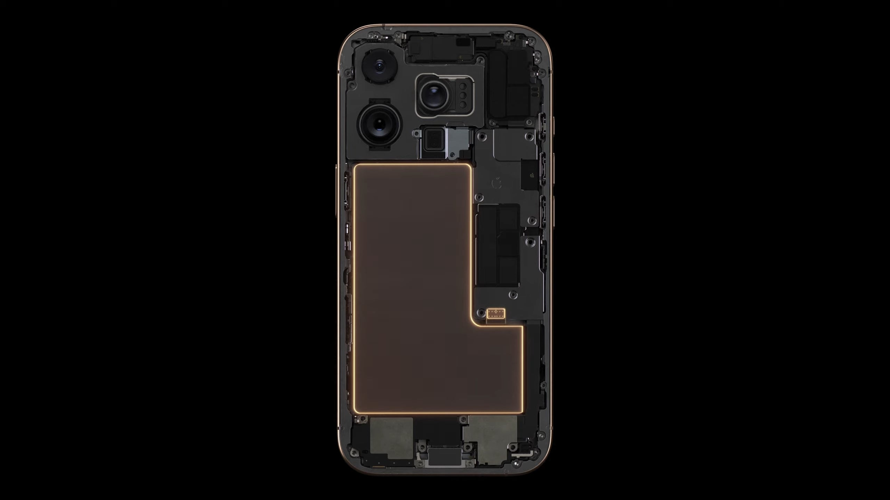
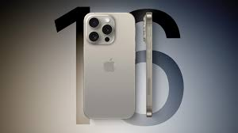

The iPhone 16 is not just the latest model; it represents a remarkable leap forward in smartphone technology. Featuring an unparalleled 10K resolution display, every image and video comes to life with stunning clarity and vibrant colors, offering an immersive viewing experience that redefines visual quality.
Capture every moment in breathtaking detail with the groundbreaking 100-megapixel camera. Equipped with advanced computational photography capabilities, the iPhone 16 allows you to take professional-grade photos and videos effortlessly, even in challenging lighting conditions. Whether you're a photography enthusiast or just want to document your daily life, the iPhone 16 delivers stunning results every time.
Say goodbye to battery anxiety! With an incredible battery life of up to 10 days on a single charge, the iPhone 16 is designed for those who demand more from their devices. Whether you're streaming your favorite shows, playing graphics-intensive games, or staying connected on the go, you can do so without constantly reaching for a charger.
In a world where convenience is paramount, the iPhone 16 introduces a revolutionary built-in teleportation device. Imagine being able to teleport anywhere in the world at a moment’s notice—be it a spontaneous trip to Paris or a quick visit to a friend across town. This groundbreaking feature transforms the way we think about travel and connectivity, making the impossible a reality.
The iPhone 16 is not just a smartphone; it’s a glimpse into the future of technology. With its cutting-edge features, stunning design, and unparalleled performance, it stands as a testament to Apple’s commitment to innovation. Experience the future today with the iPhone 16.